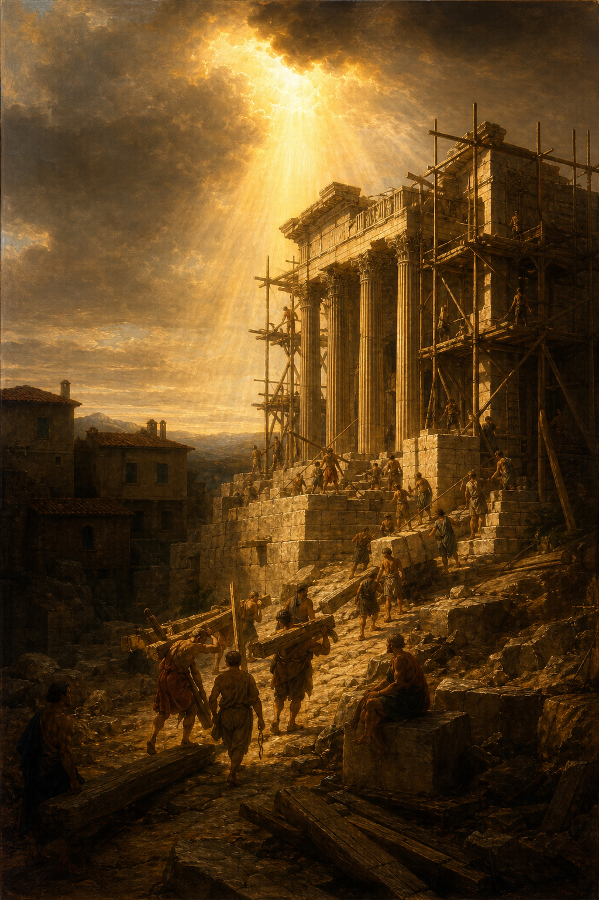

Old Testament · Book 37 of 39
Haggai
A returned people has rebuilt their own houses while leaving God's house in ruins — and one short, urgent prophecy gets the temple foundation moving again within weeks.
Haggai is the shortest kind of prophecy: a handful of dated, urgent messages delivered over just a few months to a discouraged post-exile community, confronting their misplaced priorities and reigniting the stalled rebuilding of the temple.
Is it time for you, O ye, to dwell in your cieled houses, and this house lie waste?
What happens in Haggai
Eighteen years after the exiles returned from Babylon with permission to rebuild the LORD's temple, the work has stalled, not from lack of resources but from misplaced priorities, the people have been busy finishing their own paneled houses while the temple foundation sits abandoned. Haggai's first message exposes the irony directly, pointing out that their droughts, poor harvests, and empty wallets trace back to this very neglect, and the message lands, Zerubbabel the governor, Joshua the high priest, and the people immediately resume construction. A second message, delivered as doubt creeps in over how the modest new structure compares to Solomon's glorious original temple, promises that this latter house will carry a greater glory than the first, because the Desire of all nations will one day fill it. A third oracle uses a simple lesson from the priests about ceremonial uncleanness to show that the people's own impurity has been contaminating their offerings and labor. The book closes with a final word to Zerubbabel personally, promising that amid the shaking and overthrow of worldly kingdoms, he will be set apart as God's chosen signet, a sign pointing toward the greater King who would one day descend from his line.
Why it matters
Haggai confronts a timeless human tendency to let personal comfort crowd out devotion to God, and shows how quickly obedience can reorder a community's fortunes once priorities are corrected. Its prophecy that the latter temple's glory would exceed the former finds its fulfillment not in architecture but in the person who would one day walk its courts, pointing forward to Christ as the true "Desire of all nations."